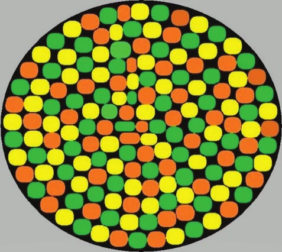

The construction of personal schema is an adaptive human activity; it explains puzzling events that could produce stress if left unattended. This propensity can be applied to people’s alleged experiences with purported aliens and UFOs. In the absence of a consensus regarding the topic, a range of explanatory schema have emerged, each purporting to provide “answers” to what may be complicated phenomena. Constructing a scientific schema to the topic may disappoint some experiencers but a critical assessment is more likely to solve these puzzles than simpler schema.
Human beings need to explain puzzling events in their lives, creating beliefs, scenarios, and worldviews at many levels—cultural, ethnic, institutional, familial, and individual. The human brain searches for beliefs more often than it looks for facts because the organism’s goal is survival, not finding “truth.” These “answers” are often helpful, serving as cognitive roadmaps that help people navigate their way through both placid and difficult times. But they may also be overly simplistic and do not do justice to complicated phenomena.
A cognitive or perceptual “schema” can be described as a framework, statement, or story that addresses important, existential human issues, and that impacts behavior. Personal schema often collide with the prevailing opinion embedded in cultural or institutional beliefs; examples of the latter include such institutions as organized religion, a business or company, and a school or university. It is within these frameworks that I approach the controversy over unidentified flying objects (UFOs). When someone views a UFO, one typically explains it in the context of their personal schemas, for example, “I have always believed that aliens from outer space are monitoring us”; “Seeing is not always believing; there must be a simple explanation for what I saw that does not include alien contact”; “There is so much that we do not know, and my experience attests to it.” There is no institutional consensus on the topic, hence many experiencers create their own schemata to explain what they have seen.
I have discussed UFOs with such celebrated investigators as J. Allen Hynek, John Mack, and Michael Persinger, and I have heard lectures on the topic by Carl Sagan and Philip J. Klass. I have spoken to dozens of people who claim to have seen UFOs, sometimes at what they purport to have been close quarters. I have even met a few individuals who claim to have had personal interactions with the inhabitants of UFOs, including “abductions,” close scrutiny of their bodily parts, and the implantation of foreign objects in their bodies. In engaging in these discussions, I have been aware of the vagaries of human memory; even first person accounts cannot escape the fallibilities of recall, which only deteriorate over time.
With this orientation as a guide, I will discuss an unusual experience I had in . The Institute of Noetic Sciences (an organization founded by the astronaut Edgar Mitchell) had asked me to take a group of its members to Brazil in order to visit spiritual communities and folk healers. On , we stayed at a rustic country hotel near Ouro Preto, a historic mining town in the state of Minas Gerais.
During our evening meal, a member of our group asked me if I had ever seen a UFO, and I replied negatively. I mentioned that several years earlier, two friends and I had visited the Valley of the Dawn, a Brazilian spiritual community. During an outdoor meditation session, the three of us were sitting in different parts of the auditorium. Immediately after the session, one of my friends—Rolf—told me that he had just seen a UFO. He described it as blue, disc-like, with flashing lights on the bottom. He said it was visible for about thirty seconds and then disappeared. A few minutes later, my other friend—Alberto—rushed over to me, asking if I had seen a UFO. I immediately separated him from Rolf, so that he could not hear Rolf’s account and asked for details. Alberto’s description was exactly the same as Rolf’s, except that his time estimate of the “sighting” was less than ten seconds. Residents of the Valley of the Dawn then told us that they often see UFOs during the afternoon meditation session, especially when recorded music is being played.
After relating this account to the group in Ouro Preto and offering several alternative explanations (a collision of space debris, optical illusions, hallucinations, cloud formations), I made the humorous observation that the aliens were neglecting direct contact with me. Nonetheless, it reflected a personal schema, namely “Visitors from other space have avoided me, even though I am open-minded about their existence.” Then, I retired for the night.
Within the hour, Shirley, a member of our group, telephoned my room urging me to step outside because there was a UFO in the sky. In my haste, I neglected to put on my shoes, and my slippers were scant protection against the rocky terrain as I followed Shirley up a hill where the object could be seen to advantage. By this time, a dozen members of our group had assembled; their attention was focused on a distant circular formation of twinkling orange, yellow, and green lights situated about 45 degrees above the horizon. During the time that it remained visible, it moved neither closer nor farther from us. Its angle above the horizon appeared to remain constant as well. Its size was difficult to estimate, because it was so far away; however, it was several times the usual size of a planet viewed in the evening sky, more closely approximating the size of the moon. Every four or five minutes, one of the lights would dart from the sphere, pause for a short period of time, and then rejoin the other lights. All the members of our group reported the same details, indicating that, if the sighting was hallucinatory, it must have been a group hallucination.
One by one, we began to eliminate ordinary explanations. It could not be an airplane or weather balloon because its position was stationary. The same characteristic ruled out the possibility of its being a comet, meteor, or earth satellite. The nocturnal timing of its appearance ruled out sun pillars or ice crystals. Its geographical location eliminated the possibility of the aurora borealis. Ball lightning was unlikely because the lights twinkled rather than pulsed. The fact that there were several lights contra-indicated a planet or a star formation. The stationary nature of the formation did not suggest a fleet of airplanes; the occasional breaking of the formation by one light was not what one would expect if the circular system had been triggered by temperature inversion or a reflection of ground lights. The formation was too far away to consist of fireflies, birds, or other earthbound organisms, although it was impossible to accurately estimate its distance without additional visual cues.
Upon returning home, I shared my story with others, always being attentive to alternative explorations. One of my informants, Belgian researcher Wim van Utrecht, noted that we did not report seeing the moon, something we attributed to the dusky weather conditions at the time. But van Utrecht suggested that the disc was actually the moon, its appearance distorted by the local weather conditions. I have seen a blue moon, an orange moon, and various lunar eclipses—but nothing resembling the sphere in question. However, van Utrecht proposed that the darting lights were the erratic movements of clouds covering the moon. The lights were quite small and moved very rapidly, but they only seemed to travel about as far as the moon’s diameter, lending credence to the suggestion.[Editor’s note] On the evening of , the waxing gibbous Moon was in the northwestern sky of Ouro Preto, about 43° above the horizon at local time (UTC−3), 33° at and 24° at , setting shortly after midnight; it was about 62% illuminated and full on (RR0 computation with the astronomy-engine ephemeris library).
Van Utrecht soon followed this hypothesis with another schema. The date of the sighting coincided with the time that the annual Carnival celebrations are in full swing.[Editor’s note] In , Easter fell on , so the Brazilian Carnival ended on Shrove Tuesday, , ten days before the sighting of . I had attended half a dozen Carnival events over the years and know that they differ from one part of the country to another. However, there is something unique about Ouro Preto Carnivals: they are designed by local students. Perhaps some creative students in the area had created a huge floating disc, one from which lights were programmed to blink, twinkle, and move. This hypothesis makes more sense to me than any of the other schema, especially when one considers that my complaint over the dinner table may have unleashed a shared unconscious determination to be sure I finally would experience an UFO sighting, a determination that would have trumped a less complicated assessment. In addition, V.J. Ballester-Olmos investigated the records of Brazilian “ufologists,” discovering that there were no reported sightings of UFOs in the Ouro Preto area at that time. Additionally, Manuel Borraz discovered the existence of a truly Brazilian underground hot-air balloon subculture in the s.Felipe Fernandes Cruz: An Art of Air and Fire: Brazil’s Renegade Balloonists, (Accessed ) These investigators have made a convincing case that our sighting was a visual display of a Carnival-related disc, one that could easily have been interpreted as a UFO, especially after our dinner discussion of the topic.[Editor’s note] The sighting described in this chapter took place on , as the author states above and in the caption of the diagram below. Moreover, the attached diagram, prepared by Scott Carpenter after he read my account, is congruent with the suggestion that an arrangement of lit candles sitting in transparent cylindrical recipients accounted for the sighting.

Some writers influenced by Carl Gustav Jung have posited that UFOs might not be actual objects but “mandalas” visualized by people yearning for harmony and equilibrium. However, nobody had told me exactly what I should expect—the UFO in question had not been described to me before I saw it—and my account tallied with those of people who came outside before and after I had arrived. I cannot deny that all of us would have been delighted if there were more harmony in our lives and more equilibrium in the world, but our accounts of this “mandala” were virtually identical. If this had been a Jungian “mandala,” perhaps it would be an example of what he called “the collective unconscious” at work. Jungian psychology is permeated with references to schema and so his suggestion needs to be cited, although I consider its viability unlikely, at least in this instance.
The circular formation was too far away and too dim to be recorded photographically. But I recall the experience quite clearly, and I continue to discuss it with individuals from time to time, still being willing to entertain ordinary explanations. In the meantime, has this anomalous sighting affected my personal schema? If anything, it has strengthened two of them: (1) Humans often have puzzling experiences that they attempt to explain by constructing various schema. (2) The construction of a scientifically informed schema may take time but is the most appropriate path to take if one would like to understand these experiences and to develop tools for similar experiences in the future. My friends and I had dismissed ordinary explanations at the time, but in subsequent years other explanations occurred that made sense to me, specifically that we had seen the moon at a time when cloud formations obscured its identify, or that a nearby Carnival celebration may have involved a colorful disc that could have been mistaken for a UFO. It is for this reason that I do not let my psychology students use the words “proof” or “proved” unless they are referring to logic, mathematics, or whiskey. Science needs to remain open-ended, and to keep searching for explanations that fit observations better than existing observations, something especially salient for controversial phenomena.
Even if my accounts and others like it do not provide evidence of extraterrestrial life forms, they take us deeper into the mysteries of human memory, emotion, and symbol-making—and help us chart the undiscovered realms in both our inner and outer worlds. The result of these experiences has been a greater awareness on my part of how people, myself included, make assumptions when confronted with new information. Humans have a propensity for schema construction because it is an adaptive trait; it provides explanations for puzzling phenomena, thus reducing stress, and promoting well-being. But if one is committed to a scientifically informed process, better explanations may emerge, even though they might be less satisfactory than one’s original attempts.
The author would like to thank Vicente-Juan Ballester-Olmos, Manuel Borraz, and Wim van Utrecht for their valuable suggestions regarding the interpretation of this sighting.